Semana 7. JSON y APIs REST
| Asignatura | Programación Móvil (IF2004) |
| Grupos | 601 y 602 de Ingeniería Informática |
| Unidad | Unidad 2. Interfaz, datos y persistencia |
Presentación interactiva de la sesión
1 Lo que vas a lograr
Hasta la semana pasada, las pantallas de tu app mostraban datos escritos en el código. El catálogo de Mercado Campesino Digital tiene que decir qué productos van bien con el clima de hoy, y el clima no vive en tu app: vive en un servidor de internet. Esta semana aprendes a preguntarle a ese servidor, a leer su respuesta y a mostrar en pantalla qué está pasando mientras esperas, cuando no llega nada y cuando algo falla.
Esta guía va despacio y en pasos pequeños. Cada paso agrega una sola idea y funciona antes de pasar al siguiente. Como la mitad de la semana depende de StatefulWidget y setState, una parte completa (la Parte 3) los explica desde cero antes de usarlos.
Al terminar la guía puedes:
- Explicar qué es una petición, una respuesta, una URL y un código de estado, y por qué una petición tarda.
- Leer un texto JSON, convertirlo con
jsonDecodey construir un objeto conProducto.fromJson. - Explicar qué es el estado de una pantalla, por qué un
StatelessWidgetno puede cambiarlo y qué hacesetState. - Describir el ciclo de vida mínimo de un
State(initState,build,dispose) y para qué sirvemounted. - Escribir funciones
asyncconawaity manejar errores contryycatch. - Hacer una petición
GETcon el paquetehttpy leerstatusCodeybody. - Mostrar los cuatro estados de una pantalla (cargando, listo, vacío y error) con un
enum. - Poner un tiempo de espera, distinguir
TimeoutExceptiondeSocketExceptiony ofrecer un botón “Reintentar”. - Armar la pantalla del catálogo de Mercado Campesino con el clima real de Envigado.
Los recuadros Para memorizar reúnen lo poco que conviene saber de memoria. Los recuadros Para razonar reúnen lo que se deduce del mecanismo. Antes de abrir cada respuesta oculta, escribe tu predicción.
Necesitas:
- Las semanas 5 y 6 vistas: navegación entre pantallas y formularios. Continúas con
taller_loginen la Parte 8, y antes practicas en un proyecto aparte. - El entorno de Flutter funcionando desde la Semana 1, con un emulador de Android o un celular conectado, y conexión a internet.
- Flutter 3.41.9 (canal stable) y Dart SDK 3.11.5, las mismas versiones de las semanas anteriores. El paquete
httpse fija en la versión 1.6.0, la que resolvióflutter pub add httpal verificar esta guía.
Dos proyectos. En las Partes 3 a 7 practicas en un proyecto desechable. Créalo ahora:
flutter create practica_s07
cd practica_s07
flutter pub add httpEn esas partes, cada ejemplo trae un main.dart completo: lo pegas encima del anterior. En la Parte 8 trabajas en taller_login, el proyecto de la Semana 5, y ahí sí agregas el catálogo paso a paso.
De dónde vienen los datos. El clima es real: viene de Open-Meteo (open-meteo.com), un servicio gratuito que no pide llave. El catálogo de productos no tiene API todavía: el proyecto aún no tiene servidor propio. Por eso la lista de productos es un texto JSON escrito dentro de la app, en una función que espera dos segundos antes de devolverlo. Es un servidor de mentira, y la guía lo dice cada vez que aparece.
El modelo de datos. La especificación del proyecto (alcance.md) no define los campos de un producto. Esta guía define el mínimo: un Producto con id, nombre, precio y disponible.
En qué ejecutar. Todo el código de esta guía se ejecutó en un emulador de Android. Una parte usa dart:io, que no existe en el navegador, así que no pruebes este código en Chrome.
2 Parte 1. Qué pasa cuando tu app habla con internet
El problema real
El catálogo de Mercado Campesino Digital debe sugerir productos de temporada, y esa sugerencia depende del clima de hoy en Envigado. Tu app no tiene ningún termómetro. Lo que sí puede hacer es preguntarle a un servidor que sí sabe. Antes de escribir código, hay que entender qué significa “preguntarle a un servidor”.
Predice primero. Pulsas un botón que pide el clima a un servidor, y el servidor tarda 3 segundos en contestar. Si no programas nada especial, ¿qué ve la persona durante esos 3 segundos?
No ve nada distinto: la pantalla queda igual que antes. La persona no sabe si el toque funcionó, si la app se rompió o si debe pulsar otra vez. Resolver ese silencio es el tema de toda la semana: mostrar “cargando” mientras esperas, y también qué pasa cuando no llega nada o llega un error.
Modelo mental: pedir un tinto en la tienda
Piensa en una tienda de barrio. Tú llegas y pides un tinto. El tendero lo prepara y te lo entrega. Tú no sabes cómo lo hace, solo sabes cómo pedirlo.
En internet pasa lo mismo, con otros nombres:
| En la tienda | En internet | Qué significa |
|---|---|---|
| Tú | Cliente | Quien pide. Aquí, tu app Flutter. |
| El tendero | Servidor | Quien responde. Aquí, el computador de Open-Meteo. |
| “Un tinto, por favor” | Petición (request) | El mensaje que envía el cliente. |
| El tinto, o “no hay” | Respuesta (response) | Lo que devuelve el servidor. |
| La carta de lo que se puede pedir | API | La lista de cosas que el servidor deja pedir y cómo pedirlas. |
Una API REST es una API a la que le pides con direcciones web y que responde con texto en un formato conocido, casi siempre JSON (Parte 2). Esta semana usas una sola.
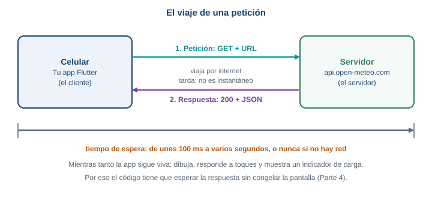
El viaje completo. La petición sale del celular, cruza internet, llega al servidor, y la respuesta hace el camino de vuelta.
Por qué una petición tarda
Una petición cruza la red del celular, pasa por varios equipos, llega a un servidor que puede estar ocupado, y la respuesta hace el mismo viaje de vuelta. Puede tardar 100 milisegundos o varios segundos. Y puede no volver nunca: si el celular pierde la señal a mitad de camino, nadie avisa. Por eso en el código de esta semana hay tres ideas que van juntas: esperar la respuesta sin congelar la app, mostrar al usuario que se está esperando, y no esperar para siempre.
La URL: la dirección de lo que pides
Una petición necesita saber a quién y qué se pide. Eso lo dice la URL. Esta es la que usarás:
https://api.open-meteo.com/v1/forecast?latitude=6.17&longitude=-75.58¤t=temperature_2m,precipitation,weather_code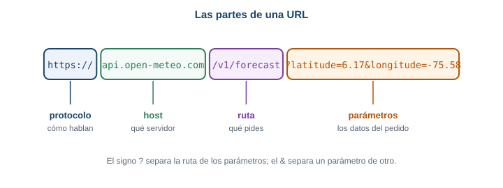
Las partes de una URL. Cada parte responde una pregunta distinta.
| Parte | En el ejemplo | Para qué sirve |
|---|---|---|
| Protocolo | https:// |
Cómo hablan cliente y servidor. https cifra la conversación; http no. |
| Host | api.open-meteo.com |
A qué servidor le pides. |
| Ruta | /v1/forecast |
Qué recurso del servidor pides: aquí, el pronóstico. |
| Parámetros | ?latitude=6.17&longitude=-75.58¤t=... |
Los detalles de tu pedido: dónde (Envigado) y qué datos (temperatura, lluvia y código del clima). |
El método más común para pedir datos se llama GET: significa “dame esto, no cambies nada”. Es el único método que usa esta guía.
Los códigos de estado
Toda respuesta trae un código de estado: un número de tres cifras que resume cómo salió la petición, antes de mirar los datos.
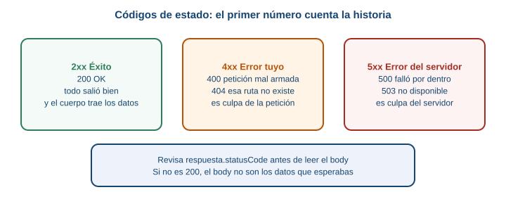
La primera cifra cuenta la historia: 2 salió bien, 4 la petición tiene un problema, 5 el servidor falló.
Un 200 significa que todo salió bien. Un 404 significa que lo que pediste no existe. Un 500 significa que el servidor falló por dentro.
Haz esto ahora
No necesitas código para ver una respuesta real. Copia la URL de arriba y pégala en el navegador de tu computador. Verás algo parecido a esto (los valores cambian con el clima, esta es la respuesta que dio el servicio el 2 de octubre de 2026):
{
"latitude": 6.1511426,
"longitude": -75.563934,
"generationtime_ms": 4.514455795288086,
"utc_offset_seconds": 0,
"timezone": "GMT",
"timezone_abbreviation": "GMT",
"elevation": 1567.0,
"current_units": {
"time": "iso8601",
"interval": 900,
"temperature_2m": "°C",
"precipitation": "mm",
"weather_code": "wmo code"
},
"current": {
"time": "2026-10-02T22:00",
"interval": 900,
"temperature_2m": 22.3,
"precipitation": 0.0,
"weather_code": 3
}
}El navegador muestra el texto en una sola línea; aquí está repartido en líneas para que se lea mejor. Lo que te interesa está dentro de current: la temperatura en grados (temperature_2m), la lluvia en milímetros (precipitation) y un código numérico del clima (weather_code), que esta semana no usas. La hora viene en GMT, y Colombia está 5 horas atrás. El servicio actualiza current cada 15 minutos (interval: 900 son 900 segundos).
Fíjate en que latitude no es exactamente 6.17: el servicio responde con el punto de su malla más cercano al que pediste.
Qué pasa si… la petición está mal
Cambia en la URL latitude=6.17 por latitude=999. El servidor responde con código 400 y un texto que explica el motivo:
{"error":true,"reason":"Latitude must be in range of -90 to 90°. Given: 999.0."}Cambia ahora la ruta /v1/forecast por /v1/forecasto. El código es 404:
{"error":true,"reason":"Not Found"}Dos errores distintos, con el mismo formato de respuesta. Tu app tiene que mirar el código de estado antes de creer que lo que llegó son los datos.
- Cliente pide, servidor responde. La petición y la respuesta viajan por internet.
- Una URL tiene protocolo, host, ruta y parámetros.
- El código
200significa que salió bien. Los4xxson problema de la petición; los5xx, del servidor. - Una petición puede tardar mucho, o no volver.
Si el servidor responde 404, ¿llegó una respuesta? Sí: la petición viajó, el servidor la entendió y contestó “eso no existe”. La conexión funcionó. Un fallo de conexión es distinto: ahí no llega ninguna respuesta, ni siquiera un 404. Esa diferencia vuelve en la Parte 7.
Si cambias latitude=6.17 por latitude=40.4 (Madrid), la respuesta es otra. ¿Qué parte de la URL dice “de dónde quiero el clima”? ¿Y qué pasaría con tu catálogo si el servidor devolviera siempre el clima de Madrid?
3 Parte 2. JSON desde cero
El problema real
La respuesta del clima llega como un texto largo. Tu pantalla necesita un número, la temperatura, y otro número, la lluvia. Hay que pasar de texto a datos que Dart entienda. Ese formato de texto se llama JSON.
Predice primero. respuesta.body contiene el texto que devolvió el servidor. ¿De qué tipo es en Dart: Map o String?
Es un String. Aunque se parezca a un mapa con llaves y dos puntos, Dart solo ve letras. No puedes escribir respuesta.body['current']: primero hay que decodificarlo, es decir, leer el texto y construir con él un Map.
Qué es JSON
JSON es un formato para escribir datos como texto, con unas pocas reglas:
- Un objeto va entre llaves
{ }y tiene pares"clave": valor. - Una lista va entre corchetes
[ ]y tiene valores separados por comas. - Un valor es un texto entre comillas dobles, un número,
true,falseonull(que significa “sin valor”).
Dart tiene un equivalente para cada pieza:
| En JSON | En Dart |
|---|---|
Objeto { ... } |
Map<String, dynamic> |
Lista [ ... ] |
List<dynamic> |
Texto "hola" |
String |
Número 5500 o 22.3 |
int o double |
true o false |
bool |
null |
null |
dynamic quiere decir “puede ser cualquier tipo”: Dart no sabe de antemano qué hay en cada clave.
Convertir el texto en un Map: jsonDecode
La función jsonDecode viene en dart:convert. Lee un texto JSON y devuelve el Map o la List que representa.
import 'dart:convert';
void main() {
const texto = '{"id": 4, "nombre": "Panela", "precio": 5500, "disponible": true}';
final datos = jsonDecode(texto);
print(datos['nombre']); // Panela
print(datos['precio']); // 5500
}Un Map se consulta con corchetes y la clave entre comillas: datos['nombre']. Si quieres probarlo, pega el ejemplo en un archivo bin/prueba.dart de tu proyecto y ejecuta dart run bin/prueba.dart.
De Map a objeto: Producto.fromJson
Trabajar con datos['nombre'] funciona, pero tiene un problema: si escribes datos['nonbre'] con una letra mal, Dart no se queja. Devuelve null y el error aparece más tarde, lejos del lugar donde lo cometiste. Un objeto de una clase propia lo resuelve: sus campos tienen nombre y tipo, y el editor te avisa si te equivocas.
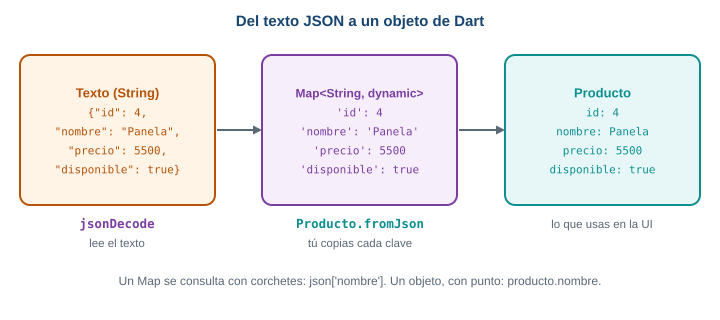
Tres formas del mismo dato. jsonDecode hace el primer paso; Producto.fromJson lo escribes tú.
Crea el archivo lib/modelo.dart en practica_s07. Es el único archivo extra que usará la guía.
class Producto {
final int id;
final String nombre;
final int precio;
final bool disponible;
Producto({
required this.id,
required this.nombre,
required this.precio,
required this.disponible,
});
factory Producto.fromJson(Map<String, dynamic> json) {
return Producto(
id: json['id'],
nombre: json['nombre'],
precio: json['precio'],
disponible: json['disponible'] ?? true,
);
}
}Línea por línea:
final int id;declara un campo que se asigna una vez y no cambia (final). Los cuatro campos son los datos mínimos de un producto.- El constructor
Producto({ required this.id, ... })crea el objeto.requiredobliga a pasar el valor. factory Producto.fromJson(...)es un constructor especial: unfactoryconstruye el objeto a partir de otra cosa, aquí unMap.json['id']devuelve undynamic; Dart lo acepta comointporque ese campo esint, y comprueba el tipo cuando el programa corre.json['disponible'] ?? truese lee “usajson['disponible'], pero si esnull, usatrue”.
Valores que faltan o son null
Un servidor real a veces omite un campo. Qué hace tu código en ese caso es una decisión tuya. En Producto, disponible tiene una respuesta razonable (si no dice nada, el producto está disponible), y por eso lleva ?? true. En cambio, un producto sin precio no tiene una respuesta razonable, y conviene que el error aparezca de inmediato. Si el JSON no trae precio, el programa falla con:
type 'Null' is not a subtype of type 'int'Se lee así: “esperaba un int y llegó null”. El mensaje dice qué tipo faltó, y por el contexto sabes en qué campo.
Otro cuidado: los números. El servicio puede devolver 22.3 o 22, y en JSON los dos son números, pero en Dart 22 es un int y 22.3 es un double. Para no depender de eso, convierte con num (el tipo del que heredan int y double):
class Clima {
final double temperatura;
final double lluvia;
Clima({required this.temperatura, required this.lluvia});
factory Clima.fromJson(Map<String, dynamic> json) {
final actual = json['current'];
return Clima(
temperatura: (actual['temperature_2m'] as num).toDouble(),
lluvia: (actual['precipitation'] as num).toDouble(),
);
}
}Agrega Clima debajo de Producto en el mismo archivo. actual es el objeto current de la respuesta. as num le dice a Dart “trátalo como número” y .toDouble() lo vuelve double.
Compruébalo con una prueba
Para saber que el parseo funciona sin abrir el emulador, escribe test/modelo_test.dart:
import 'dart:convert';
import 'package:flutter_test/flutter_test.dart';
import 'package:practica_s07/modelo.dart';
void main() {
test('Producto.fromJson lee los cuatro campos', () {
final p = Producto.fromJson(
jsonDecode('{"id":1,"nombre":"Panela","precio":5500,"disponible":false}'),
);
expect(p.nombre, 'Panela');
expect(p.precio, 5500);
expect(p.disponible, false);
});
test('si falta disponible, vale true', () {
final p = Producto.fromJson(
jsonDecode('{"id":1,"nombre":"Panela","precio":5500}'),
);
expect(p.disponible, true);
});
test('Clima.fromJson acepta enteros y decimales', () {
final c = Clima.fromJson(
jsonDecode('{"current":{"temperature_2m":20,"precipitation":0.0}}'),
);
expect(c.temperatura, 20.0);
});
}Ejecútala con flutter test. Las tres pasan. El nombre practica_s07 en el import es el nombre de tu proyecto; si lo llamaste distinto, cámbialo.
Qué pasa si… llega una lista, o llega algo que no es JSON
Si el servidor responde con una lista y tú escribes jsonDecode(texto) as Map, Dart falla con:
type 'List<dynamic>' is not a subtype of type 'Map<dynamic, dynamic>' in type castY si el servidor responde con una página HTML en vez de JSON (pasa cuando una dirección está mal), jsonDecode falla con una FormatException:
FormatException: Unexpected character (at character 1)
<html>Not found</html>
^El ^ marca dónde se atragantó el lector: en el primer carácter, porque un JSON no empieza con <.
jsonDecode(texto)convierte un texto JSON en unMapo unaList.Producto.fromJson(mapa)convierte unMapen un objeto propio.json['clave'] ?? valorpone un valor por defecto si falta la clave.- Los números de JSON se leen como
numy luego se pasan aintodouble.
¿Por qué precio no tiene ?? 0? Porque un precio inventado sería peor que un error: el catálogo mostraría “gratis” por una falla del servidor. Cuando decides si un campo lleva un valor por defecto, pregúntate si el valor por defecto es una respuesta honesta o una forma de esconder el problema.
4 Parte 3. StatefulWidget desde cero
Esta parte es la base de las siguientes cuatro. En semanas anteriores usaste StatefulWidget y setState siguiendo un modelo, y es normal que haya quedado la duda de por qué existen. Aquí se explican desde cero, con un ejemplo mínimo. Tómate el tiempo: todo lo que sigue depende de esto.
El problema real
La pantalla del catálogo pasa por varias caras: primero dice “cargando”, cuando llegan los datos muestra la lista, y si algo falla muestra un mensaje. La pantalla cambia después de haber nacido, y nadie la reconstruye desde afuera. Necesitas un mecanismo para que una pantalla tenga datos que cambian y se muestren al cambiar.
Predice primero. Un StatelessWidget declara int cuenta = 0; dentro de su build, muestra Text('Llevas $cuenta') y tiene un botón que hace cuenta = cuenta + 1. Pulsas el botón 3 veces. ¿Qué lees en pantalla?
Lees Llevas 0, siempre. Hay dos razones y las dos importan:
- Nadie le pidió a Flutter que dibuje de nuevo. Cambiar una variable no repinta la pantalla.
- Aunque
buildcorriera otra vez, volvería a ejecutarint cuenta = 0;y el contador arrancaría de cero en cada construcción.
La Parte 3 resuelve las dos.
Qué es el “estado”
El estado es un dato que cambia mientras la pantalla está viva y que la pantalla debe reflejar. Dos preguntas te ayudan a reconocerlo:
- ¿Este dato puede cambiar mientras la persona usa la pantalla?
- Si cambia, ¿la pantalla tiene que verse distinta?
Si las dos respuestas son sí, es estado. Ejemplos:
| Dato | ¿Es estado? | Por qué |
|---|---|---|
El contador cuenta |
Sí | Sube con cada toque y se ve en pantalla. |
| Si la lista está cargando o lista | Sí | Cambia cuando llega la respuesta y la pantalla cambia. |
| El título “Catálogo de temporada” | No | Nunca cambia. |
| El nombre de un producto que ya se mostró | No | Una vez dibujado, no cambia solo. |
Una analogía: el menú impreso y la pizarra
En un restaurante hay dos formas de mostrar el menú del día.
- Un menú impreso. Si el tomate sube de precio, hay que imprimir otro menú. El menú viejo no se corrige solo.
- Una pizarra. Borras el precio y escribes el nuevo. La pizarra es la misma; lo escrito cambió.
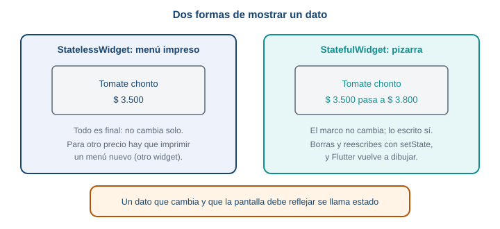
Un StatelessWidget es el menú impreso. Un StatefulWidget es la pizarra.
Un StatelessWidget es el menú impreso: describe lo que se ve a partir de los datos que recibió, y si esos datos cambian, hay que construir un widget nuevo. Un StatefulWidget es la pizarra: tiene un lugar donde guardar datos que cambian, y una forma de decir “borré y reescribí, vuelve a dibujar”.
Rompe esto: un contador con StatelessWidget
Pega esto en lib/main.dart de practica_s07 y ejecuta la app:
import 'package:flutter/material.dart';
void main() => runApp(const MaterialApp(home: ContadorRoto()));
class ContadorRoto extends StatelessWidget {
const ContadorRoto({super.key});
@override
Widget build(BuildContext context) {
int cuenta = 0;
return Scaffold(
appBar: AppBar(title: const Text('Contador')),
body: Center(
child: Text('Llevas $cuenta', style: const TextStyle(fontSize: 32)),
),
floatingActionButton: FloatingActionButton(
onPressed: () {
cuenta = cuenta + 1;
debugPrint('cuenta vale $cuenta');
},
child: const Icon(Icons.add),
),
);
}
}debugPrint escribe un mensaje en la consola de depuración (la pestaña Debug Console de VS Code, o la terminal donde corre flutter run). Pulsa el botón varias veces. En la consola ves que cuenta vale 1, luego 2, luego 3: la variable sí cambia. En pantalla sigue diciendo Llevas 0. El dato cambió y la pantalla no se enteró, porque nada le dijo a Flutter que dibujara de nuevo.
Por qué un StatelessWidget no puede cambiar solo
Un StatelessWidget solo tiene un método útil, build, que recibe el contexto y devuelve lo que se ve. Sus campos son final: no se reasignan. No tiene ningún mecanismo para pedirle a Flutter “corre build otra vez”. Y si Flutter corre build por otra razón, todo lo que esté declarado dentro se vuelve a crear desde cero. Un dato que cambia no puede vivir ahí.
Las dos clases de un StatefulWidget
La solución es partir el widget en dos clases, cada una con un trabajo:
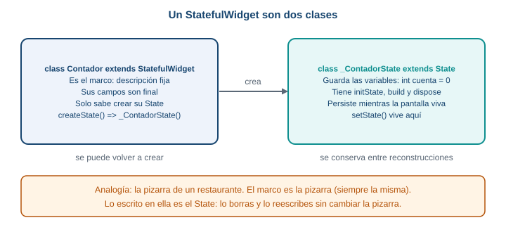
Las dos clases. El marco se puede volver a crear; el State se conserva mientras la pantalla viva.
- La clase
StatefulWidgetes el marco de la pizarra. Es fija: sus campos sonfinal. Lo único importante que hace es crear suState. - La clase
Statees lo escrito en la pizarra. Guarda las variables que cambian y tiene el métodobuild. Flutter la conserva viva mientras la pantalla exista.
¿Por qué dos? Porque Flutter vuelve a crear los widgets con mucha frecuencia: son baratos y se descartan. Si el contador viviera en el widget, se perdería cada vez que Flutter lo recrea. Al ponerlo en el State, que Flutter conserva, el dato sobrevive.
Este es el mismo contador, ahora con las dos clases:
import 'package:flutter/material.dart';
void main() => runApp(const MaterialApp(home: Contador()));
class Contador extends StatefulWidget {
const Contador({super.key});
@override
State<Contador> createState() => _ContadorState();
}
class _ContadorState extends State<Contador> {
int cuenta = 0;
@override
Widget build(BuildContext context) {
return Scaffold(
appBar: AppBar(title: const Text('Contador')),
body: Center(
child: Text('Llevas $cuenta', style: const TextStyle(fontSize: 32)),
),
floatingActionButton: FloatingActionButton(
onPressed: () {
setState(() {
cuenta = cuenta + 1;
});
},
child: const Icon(Icons.add),
),
);
}
}Línea por línea:
class Contador extends StatefulWidgetes el marco. No tiene variables que cambien.State<Contador> createState() => _ContadorState();le dice a Flutter quéStatele corresponde. Flutter lo llama una vez, cuando la pantalla nace.class _ContadorState extends State<Contador>es la clase donde viven los datos. El guion bajo_al comienzo del nombre lo hace privado de este archivo; es una convención de Dart que verás en todos losState.int cuenta = 0;es el estado. Está fuera debuild, así que no se reinicia cada vez quebuildcorre.buildvive en elState. Es el mismobuildde siempre.setState(() { cuenta = cuenta + 1; })cambia el dato y avisa a Flutter. Se explica a continuación.
Qué hace setState
setState recibe una función. Hace tres cosas, en este orden:
- Ejecuta esa función, que es donde cambias la variable.
- Marca la pantalla como desactualizada: “lo que se ve ya no coincide con los datos”.
- Pide a Flutter que ejecute
buildotra vez.
setState no dibuja nada. Quien dibuja es build; setState solo pide que corra de nuevo.
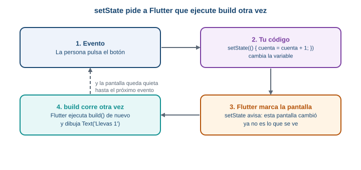
El ciclo completo. Cada toque recorre las cuatro cajas y la pantalla queda quieta hasta el siguiente evento.
Con el contador funcionando, pulsa el botón: Llevas 1, Llevas 2, Llevas 3. Cada toque cambió la variable, setState pidió reconstruir, build corrió con el valor nuevo.
Recuerda: cambias el dato dentro de setState y Flutter vuelve a correr build.
Rompe esto otra vez: olvida setState
Quita setState y deja solo la línea que cambia la variable:
onPressed: () {
cuenta = cuenta + 1;
debugPrint('cuenta vale $cuenta');
},Pulsa el botón. La consola dice cuenta vale 1, 2, 3. En pantalla sigue Llevas 0. Es el mismo síntoma del StatelessWidget, y tiene la misma causa: la variable cambió y nadie pidió reconstruir. Es el error más común con setState. Cuando una pantalla “no se actualiza” y la variable sí cambió (lo puedes comprobar con debugPrint), lo primero que se revisa es si el cambio está dentro de setState.
El ciclo de vida mínimo
Un State nace, vive y muere. Flutter llama a tres métodos en esos momentos:
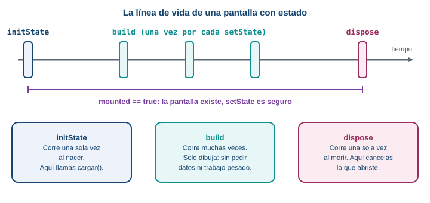
La línea de vida. initState y dispose corren una vez; build corre muchas veces.
| Método | Cuándo corre | Para qué lo usas |
|---|---|---|
initState |
Una vez, cuando el State nace |
Arrancar cosas una sola vez. En esta guía: llamar a cargar() para pedir datos. |
build |
La primera vez y después de cada setState |
Solo dibujar. Nada de pedir datos aquí. |
dispose |
Una vez, cuando el State muere |
Soltar lo que abriste (más adelante en el curso: controladores, suscripciones). |
Se ve mejor ejecutándolo. Reemplaza main.dart con este archivo, que agrega una pantalla de inicio con un botón para abrir el contador:
import 'package:flutter/material.dart';
void main() => runApp(const MaterialApp(home: Inicio()));
class Inicio extends StatelessWidget {
const Inicio({super.key});
@override
Widget build(BuildContext context) {
return Scaffold(
appBar: AppBar(title: const Text('Inicio')),
body: Center(
child: ElevatedButton(
onPressed: () {
Navigator.push(
context,
MaterialPageRoute(builder: (context) => const Contador()),
);
},
child: const Text('Abrir el contador'),
),
),
);
}
}
class Contador extends StatefulWidget {
const Contador({super.key});
@override
State<Contador> createState() => _ContadorState();
}
class _ContadorState extends State<Contador> {
int cuenta = 0;
@override
void initState() {
super.initState();
debugPrint('initState: la pantalla nació');
}
@override
void dispose() {
debugPrint('dispose: la pantalla murió');
super.dispose();
}
@override
Widget build(BuildContext context) {
debugPrint('build: dibujando con cuenta = $cuenta');
return Scaffold(
appBar: AppBar(title: const Text('Contador')),
body: Center(
child: Text('Llevas $cuenta', style: const TextStyle(fontSize: 32)),
),
floatingActionButton: FloatingActionButton(
onPressed: () {
setState(() {
cuenta = cuenta + 1;
});
},
child: const Icon(Icons.add),
),
);
}
}Abre el contador, pulsa el botón de más dos veces y vuelve con la flecha de atrás. La consola muestra:
initState: la pantalla nació
build: dibujando con cuenta = 0
build: dibujando con cuenta = 1
build: dibujando con cuenta = 2
dispose: la pantalla murióinitState corrió una vez, build corrió tres veces (una al nacer y una por cada setState) y dispose corrió al volver atrás. Dos detalles: super.initState() va primero en initState, y super.dispose() va al final de dispose. Así lo exige Flutter.
Por eso el trabajo de pedir datos no va en build. Como build corre en cada setState, un pedido dentro de build se repetiría con cada cambio, y cada respuesta dispararía otro setState: un bucle. Los pedidos van en initState, que corre una sola vez.
mounted: ¿la pantalla sigue viva?
Hay un caso delicado. Pides datos con await (Parte 4) y mientras esperas, la persona sale de la pantalla. Cuando la respuesta llega, tu código quiere llamar a setState en un State que ya murió. Es como enviar la comida a una mesa que ya se fue del restaurante.
mounted es una propiedad del State que vale true entre initState y dispose, y false después. Se revisa después de cada await, antes de tocar setState.
Para verlo, usa este archivo. Es la misma estructura de dos pantallas, con una pantalla Lento que espera 3 segundos antes de llamar a setState, sin revisar mounted:
import 'package:flutter/material.dart';
void main() => runApp(const MaterialApp(home: Inicio()));
class Inicio extends StatelessWidget {
const Inicio({super.key});
@override
Widget build(BuildContext context) {
return Scaffold(
appBar: AppBar(title: const Text('Inicio')),
body: Center(
child: ElevatedButton(
onPressed: () {
Navigator.push(
context,
MaterialPageRoute(builder: (context) => const Lento()),
);
},
child: const Text('Abrir la pantalla lenta'),
),
),
);
}
}
class Lento extends StatefulWidget {
const Lento({super.key});
@override
State<Lento> createState() => _LentoState();
}
class _LentoState extends State<Lento> {
String mensaje = 'Pulsa el botón y sal enseguida';
Future<void> esperar() async {
await Future.delayed(const Duration(seconds: 3));
// if (!mounted) return;
setState(() {
mensaje = 'Ya pasaron 3 segundos';
});
}
@override
Widget build(BuildContext context) {
return Scaffold(
appBar: AppBar(title: const Text('Pantalla lenta')),
body: Center(child: Text(mensaje)),
floatingActionButton: FloatingActionButton(
onPressed: esperar,
child: const Icon(Icons.timer),
),
);
}
}(Future.delayed y await se explican en la Parte 4; por ahora léelo como “espera 3 segundos”.) Abre la pantalla lenta, pulsa el botón del reloj y vuelve atrás antes de que pasen los 3 segundos. Cuando se cumplen, la consola muestra un error que empieza así:
setState() called after dispose(): _LentoState#20759(lifecycle state: defunct, not mounted)
This error happens if you call setState() on a State object for a widget that no longer appears in
the widget tree (e.g., whose parent widget no longer includes the widget in its build). This error
can occur when code calls setState() from a timer or an animation callback.El número después de _LentoState# cambia en cada ejecución. El mensaje dice lo que pasó: lifecycle state: defunct, not mounted significa “este State ya murió”. La solución es la línea que está comentada. Quita las dos barras:
if (!mounted) return;Se lee “si la pantalla ya no está montada, termina aquí”. Con esa línea, la respuesta que llega tarde se descarta en silencio. En el resto de la guía, después de cada await y antes de cada setState va un if (!mounted) return;.
Recuerda: después de un await, revisa mounted antes de llamar a setState.
Cuándo no hace falta un StatefulWidget
Si una pantalla no tiene datos que cambien, es un StatelessWidget. No conviertas todo en StatefulWidget “por si acaso”: un StatefulWidget es más código y más cosas que pueden salir mal. La regla: nace como StatelessWidget, y pasa a StatefulWidget cuando aparece un dato que cambia y que la pantalla debe reflejar.
- Estado es un dato que cambia y que la pantalla debe reflejar.
- Un
StatefulWidgetson dos clases: el widget (marco fijo) y suState(donde viven las variables). setState(() { ... })cambia el dato y pide a Flutter que corrabuildotra vez.initStatecorre una vez al nacer,buildcorre en cada cambio,disposecorre una vez al morir.- Después de un
await,if (!mounted) return;antes desetState.
Si el contador está en el State y no en el widget, ¿qué pasaría si estuviera en el widget? Los campos del widget son final (no se reasignan). Y aunque no lo fueran, Flutter recrea los widgets con frecuencia, y el dato se perdería en cada recreación. El State existe porque algo tiene que sobrevivir a esas recreaciones: es un lugar estable para guardar lo que cambia.
En el ejemplo de la línea de vida, build corrió tres veces. Si dentro de build hubiera una línea que pidiera datos a un servidor, ¿cuántas peticiones saldrían en ese recorrido? ¿Y cuántas habría si el pedido estuviera en initState?
5 Parte 4. Asincronía mínima en Dart
El problema real
Pedir datos a un servidor tarda (Parte 1). Si tu código se quedara quieto esperando, la app entera se congelaría: nada se dibujaría, ningún toque respondería. Dart resuelve esto con un tipo de función que puede esperar sin bloquear nada.
Predice primero. Tu función pedir() espera 2 segundos antes de continuar. Durante esos 2 segundos, ¿puedes seguir tocando y desplazando la pantalla?
Sí. await detiene a la función pedir() en esa línea, pero no a la app: Flutter sigue dibujando y atendiendo toques. Es el mismo mecanismo que permite mostrar el indicador de carga mientras llega la respuesta.
Modelo mental: el número de pedido
Pides un almuerzo en un restaurante. Te dan un número de pedido y te sientas. No te quedas parado en el mostrador: sigues en tu mesa, hablas, miras el celular. Cuando tu número está listo, vas por la comida.
- El número de pedido es un
Future: la promesa de un valor que llegará más adelante. - Quedarte en tu mesa es
await: esperar ese valor sin bloquear lo demás. - Marcar la función como
asynces avisarle a Dart que adentro habrá esperas.
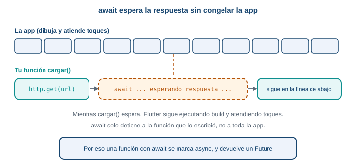
await solo detiene a la función que lo escribió, no a toda la app.
Tu primera función async
Reemplaza main.dart:
import 'package:flutter/material.dart';
void main() => runApp(const MaterialApp(home: PruebaAsync()));
Future<String> pedirSaludo() async {
await Future.delayed(const Duration(seconds: 2));
return 'Hola desde el servidor';
}
class PruebaAsync extends StatefulWidget {
const PruebaAsync({super.key});
@override
State<PruebaAsync> createState() => _PruebaAsyncState();
}
class _PruebaAsyncState extends State<PruebaAsync> {
String mensaje = 'Pulsa el botón';
Future<void> pedir() async {
setState(() {
mensaje = 'Esperando...';
});
final saludo = await pedirSaludo();
if (!mounted) return;
setState(() {
mensaje = saludo;
});
}
@override
Widget build(BuildContext context) {
return Scaffold(
appBar: AppBar(title: const Text('Async')),
body: Center(child: Text(mensaje, style: const TextStyle(fontSize: 22))),
floatingActionButton: FloatingActionButton(
onPressed: pedir,
child: const Icon(Icons.cloud_download),
),
);
}
}Línea por línea:
Future<String> pedirSaludo() asynces una función que promete unString. Por eso el tipo de retorno esFuture<String>y noString.await Future.delayed(const Duration(seconds: 2))espera 2 segundos.Future.delayedes una forma de simular un servidor lento; sirve para practicar sin internet. Se usa de nuevo en la Parte 6 para el servidor de mentira.return 'Hola desde el servidor'entrega el valor prometido. La función esasync, así que lo que se devuelve queda envuelto en elFuture.Future<void> pedir() asynces un método delState.voiddentro delFuturesignifica “no devuelve ningún valor”.final saludo = await pedirSaludo();espera el valor y lo guarda ensaludo, ya comoString. Sinawait,saludosería unFuture<String>.onPressed: pedirpasa la función sin paréntesis. Con paréntesis (pedir()) la ejecutarías al construir el botón, no al tocarlo.
Pulsa el botón: aparece Esperando..., y 2 segundos después, Hola desde el servidor. Durante la espera puedes seguir tocando la pantalla.
Recuerda: después de un await, if (!mounted) return; antes de setState.
Por qué build no puede ser async
Podrías pensar: “si pedir datos es asíncrono, hago build asíncrono”. No se puede, y el editor lo dice:
@override
Widget build(BuildContext context) async { // no compila
return const Text('x');
}Functions marked 'async' must have a return type which is a supertype of 'Future'.build tiene que devolver un Widget ahora mismo, porque Flutter lo necesita para dibujar. Una función async devuelve un Future<Widget>, y Flutter no sabe qué hacer con eso. La solución es el patrón que ya usaste: build solo dibuja a partir del estado actual, y el trabajo asíncrono vive en otro método (pedir, y más adelante cargar) que se llama desde initState o desde un botón y que termina en un setState.
Qué pasa si… olvidas el await
final respuesta = http.get(Uri.parse('https://api.open-meteo.com/v1/forecast'));
print(respuesta.statusCode);El analizador marca:
The getter 'statusCode' isn't defined for the type 'Future<Response>'.respuesta es un Future<Response>: el número de pedido, no la comida. Falta el await.
try y catch: cuando la espera termina mal
Una función asíncrona puede terminar con un error en vez de un valor: el servidor no contesta, no hay red. Si no lo manejas, el error queda sin atender y, en una pantalla, la app se queda esperando. try y catch lo atrapan.
Cambia pedirSaludo para que falle, y pedir para que lo maneje:
Future<String> pedirSaludo() async {
await Future.delayed(const Duration(seconds: 2));
throw Exception('Servidor caído');
}Future<void> pedir() async {
setState(() {
mensaje = 'Esperando...';
});
try {
final saludo = await pedirSaludo();
if (!mounted) return;
setState(() {
mensaje = saludo;
});
} catch (e) {
if (!mounted) return;
setState(() {
mensaje = 'Falló: $e';
});
}
}throw Exception('...') lanza un error a propósito. Dentro del try, si algo lanza un error, Dart salta al catch y la variable e trae el error. Al pulsar el botón, a los 2 segundos aparece Falló: Exception: Servidor caído. En la Parte 7 vas a atrapar tipos de error concretos con on.
Existe otra forma de mostrar datos que llegan tarde: FutureBuilder, un widget que escucha un Future y reconstruye cuando termina. Esta guía no lo usa. Con StatefulWidget y setState ves cada paso, y eso es lo que importa por ahora.
- Una función que espera se marca
asyncy devuelve unFuture<...>. awaitespera el valor sin congelar la app, y solo dentro de funcionesasync.buildno puede serasync: el trabajo asíncrono va en otro método.try { ... } catch (e) { ... }atrapa los errores de lo que esperas.
Si await detiene la función, ¿cómo es posible que la app siga viva? Porque await no se queda girando en un ciclo: le dice a Dart “sigue con otras cosas y vuelve aquí cuando el valor llegue”. La función queda en pausa; el resto de la app, no.
6 Parte 5. Tu primera petición con http
El problema real
Ya sabes esperar. Falta la petición de verdad: pedirle a Open-Meteo el clima de Envigado y ver qué responde.
Predice primero. Sin conexión a internet y sin try/catch, pulsas el botón que lanza la petición. ¿Qué ves en pantalla?
Nada cambia. La petición falla antes del setState, así que el texto de la pantalla queda como estaba, y en la consola aparece un error sin atender (Unhandled Exception) con el texto de la excepción. Es el mismo silencio de la Parte 1, ahora causado por un fallo. En la Parte 7 se arregla.
El paquete http
Dart no trae una forma cómoda de hacer peticiones web. Un paquete es código ya escrito que agregas a tu proyecto. Para pedir datos usarás http, el paquete oficial del equipo de Dart. Ya lo agregaste con flutter pub add http; eso modificó pubspec.yaml:
dependencies:
flutter:
sdk: flutter
http: ^1.6.0^1.6.0 significa “la versión 1.6.0 o una posterior compatible”. Si el comando no fue a ningún lado, ejecútalo de nuevo o escribe la línea a mano y corre flutter pub get. Para usar el paquete, lo importas con un nombre corto:
import 'package:http/http.dart' as http;as http permite escribir http.get(...) y deja claro de dónde viene cada función.
La petición, línea por línea
Reemplaza main.dart:
import 'package:flutter/material.dart';
import 'package:http/http.dart' as http;
void main() => runApp(const MaterialApp(home: PruebaHttp()));
class PruebaHttp extends StatefulWidget {
const PruebaHttp({super.key});
@override
State<PruebaHttp> createState() => _PruebaHttpState();
}
class _PruebaHttpState extends State<PruebaHttp> {
String texto = 'Pulsa el botón';
Future<void> pedir() async {
final url = Uri.parse(
'https://api.open-meteo.com/v1/forecast'
'?latitude=6.17&longitude=-75.58'
'¤t=temperature_2m,precipitation,weather_code',
);
final respuesta = await http.get(url);
debugPrint('código: ${respuesta.statusCode}');
debugPrint('cuerpo: ${respuesta.body}');
if (!mounted) return;
setState(() {
texto = 'Código ${respuesta.statusCode}\n${respuesta.body.length} caracteres';
});
}
@override
Widget build(BuildContext context) {
return Scaffold(
appBar: AppBar(title: const Text('Primera petición')),
body: Center(child: Text(texto, style: const TextStyle(fontSize: 22))),
floatingActionButton: FloatingActionButton(
onPressed: pedir,
child: const Icon(Icons.cloud_download),
),
);
}
}Uri.parse('...')convierte el texto de la URL en un objetoUri.http.getno acepta unString: pide unUri.- Las tres cadenas seguidas dentro de
Uri.parse(...)se pegan en una sola. Es solo una forma de partir una URL larga en líneas. await http.get(url)envía la peticiónGETy espera la respuesta. El resultado es un objetoResponse.respuesta.statusCodees el código de estado (Parte 1), unint.respuesta.bodyes el cuerpo de la respuesta, unStringcon el texto JSON.if (!mounted) return;va después delawait, por lo que ya sabes (Parte 3).
Ejecuta, pulsa el botón y mira la consola. Con conexión, el código es 200, el cuerpo es el JSON de la Parte 1 y la pantalla dice Código 200 y cerca de 411 caracteres (el número exacto cambia un poco con los decimales de cada medición).
El permiso de internet en Android
Android no deja que una app use la red sin pedirlo. El permiso se llama INTERNET y se declara en un archivo del proyecto: android/app/src/main/AndroidManifest.xml. Ábrelo y agrega la línea uses-permission como primer hijo de <manifest>, antes de <application>:
<manifest xmlns:android="http://schemas.android.com/apk/res/android">
<uses-permission android:name="android.permission.INTERNET"/>
<application
android:label="practica_s07"Una sorpresa: la plantilla de flutter create ya incluye el permiso, pero solo en los manifiestos de depuración y de perfil (android/app/src/debug/AndroidManifest.xml y .../profile/...), no en el principal. Por eso tus pruebas en el emulador funcionan sin que lo hayas escrito, y la app instalada desde un APK de producción, que usa el manifiesto principal, falla sin avisar durante el desarrollo. Agrégalo al principal desde el primer día.
Para ver qué pasa sin el permiso, se probó esta guía quitándolo de todos los manifiestos. La petición a una dirección que sí existe falla así:
ClientException with SocketException: Failed host lookup: 'api.open-meteo.com'
(OS Error: No address associated with hostname, errno = 7), uri=https://api.open-meteo.com/...El mensaje parece un problema de DNS, no de permisos. Si ves un Failed host lookup con internet funcionando, revisa el manifiesto. Después de editar el manifiesto, detén la app y vuelve a ejecutarla: un hot reload no recarga los archivos de Android.
http:// frente a https://, y localhost frente a 10.0.2.2
Dos detalles de direcciones que confunden con frecuencia.
https frente a http. https cifra la conversación; http va en texto plano, y cualquiera en la misma red puede leerla. Usa siempre https con servidores públicos, como Open-Meteo. En la prueba de esta guía, con Flutter 3.41.9 en un emulador con Android 16, una petición a un servidor local con http:// funcionó en modo debug. No cuentes con eso: Android y iOS bloquean el tráfico sin cifrar por defecto en sus librerías propias, y no se probó un APK de producción. La regla práctica: https siempre, y http solo para un servidor tuyo, local, mientras desarrollas.
localhost frente a 10.0.2.2. Si algún día programas un servidor en tu computador y lo llamas desde la app, la dirección localhost no sirve en el emulador. Dentro del emulador, localhost es el propio emulador, que no tiene ningún servidor. Para llegar a tu computador el emulador de Android usa la dirección especial 10.0.2.2.
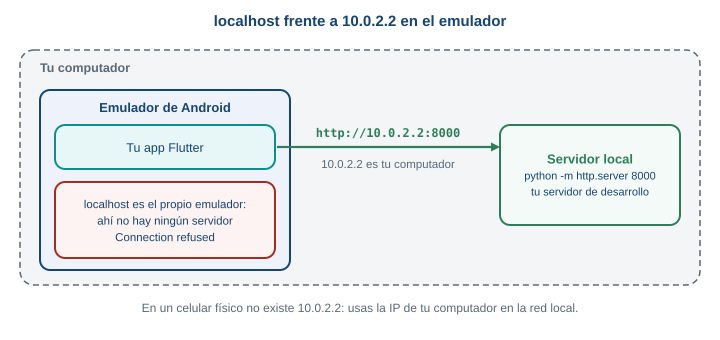
Desde el emulador, 10.0.2.2 es tu computador. localhost es el propio emulador.
Prueba opcional, si tienes Python. En una carpeta con cualquier archivo, ejecuta python -m http.server 8000, y pide http://10.0.2.2:8000/ desde la app: responde 200. Con http://localhost:8000/, falla con:
ClientException with SocketException: Connection refused (OS Error: Connection refused, errno = 111),
address = localhost, port = 33518, uri=http://localhost:8000/Connection refused significa que alguien contestó “aquí no hay nada escuchando”, y ese alguien es el propio emulador. En un celular físico no existe 10.0.2.2: usas la dirección IP de tu computador en la red local. En esta guía no necesitas nada de esto, porque el clima viene de un servidor público.
Qué pasa si… la URL está mal
Con la URL de forecasto (Parte 1), la petición no lanza ningún error: await http.get(url) termina bien y devuelve un Response con statusCode 404. Una petición que llega a un servidor que responde “no existe” es una petición exitosa desde el punto de vista del paquete. Por eso hay que mirar statusCode y no suponer que si no hubo excepción, todo salió bien. Lo mismo ocurre con un 400 y un 500. Sin conexión, en cambio, sí hay excepción, porque ninguna respuesta llegó.
Un detalle de la primera vez: en un emulador recién iniciado, la primera petición puede tardar bastante más que las siguientes. Durante la verificación de esta guía, una primera petición a un servidor local tardó más de 8 segundos y la siguiente respondió al instante. Tenlo presente en la Parte 7, cuando pongas un límite de espera.
flutter pub add httpagrega el paquete; se importa conimport 'package:http/http.dart' as http;.http.get(Uri.parse(url))devuelve unFuture<Response>; conawaitobtienes laResponse.respuesta.statusCodees el código;respuesta.bodyes el texto.- Un
404o un500no lanzan error: hay que revisarstatusCode. - Android necesita el permiso
INTERNETen el manifiesto principal.
¿Por qué http.get no lanza una excepción con un 404? Porque ese 404 es una respuesta legítima del servidor: la conexión funcionó, el servidor entendió la petición y contestó. Las excepciones se reservan para cuando no hay respuesta. Esta distinción decide dónde pones cada comprobación: las excepciones se atrapan con catch, y los códigos de estado se revisan con un if.
Si tu app envía la ubicación de una persona en la URL (?latitude=...&longitude=...) y la URL usara http:// en vez de https://, ¿quién podría leer esa ubicación mientras viaja?
7 Parte 6. Los cuatro estados de la pantalla
El problema real
Ya puedes pedir datos y esperar. Falta decidir qué ve la persona en cada momento. Una pantalla que pide datos pasa por cuatro situaciones distintas, y cada una necesita su propio aspecto.
Predice primero. El servidor responde con código 200 y con una lista vacía: []. ¿Es un error? ¿Qué debería ver la persona?
La petición salió bien y el servidor contestó que no hay nada, así que no hay ningún error. Si la pantalla se queda en blanco, la persona piensa que la app se rompió. Debe ver un aviso claro: “No hay productos”. La especificación del proyecto lo pide: si el productor no tiene productos disponibles esta semana, la aplicación muestra un aviso en vez de una lista vacía.
Modelo mental: un semáforo
Un semáforo está en una luz a la vez: roja, amarilla o verde, nunca dos. Una pantalla que pide datos se comporta igual: está en un estado a la vez, y lo que muestra depende de cuál sea.
| Estado | Qué significa | Qué muestra |
|---|---|---|
cargando |
Pedimos datos y no han llegado | Un indicador de carga |
listo |
Llegaron datos | La lista |
vacio |
Llegó la respuesta, pero sin datos | Un aviso: “no hay nada” |
error |
Algo falló | Un mensaje claro y un botón para reintentar |
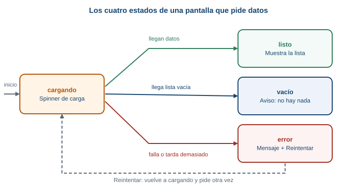
La pantalla empieza en cargando y, según cómo responda el servidor, termina en uno de los otros tres. Desde error, el botón “Reintentar” vuelve a cargando.
Una variable con cuatro valores: enum
Hay que guardar en qué estado está la pantalla. Una variable que solo pueda valer una de cuatro opciones es lo que Dart llama un enum: una lista cerrada de nombres.
enum Estado { cargando, listo, vacio, error }Después declaras la variable del estado, que es la que cambia con setState:
Estado estado = Estado.cargando;¿Por qué no cuatro variables bool (cargando, hayError…)? Porque cuatro bool permiten combinaciones imposibles, como estar cargando y con error a la vez. Con un enum, solo existe una luz del semáforo encendida.
El código completo del ejemplo
Reemplaza main.dart. Necesita lib/modelo.dart de la Parte 2 (con Producto):
import 'dart:convert';
import 'package:flutter/material.dart';
import 'modelo.dart';
void main() => runApp(const MaterialApp(home: ProductosScreen()));
enum Estado { cargando, listo, vacio, error }
const productosJson = '''
[
{"id": 1, "nombre": "Tomate chonto", "precio": 3500, "disponible": true},
{"id": 2, "nombre": "Papa criolla", "precio": 4200, "disponible": true},
{"id": 3, "nombre": "Aguacate hass", "precio": 6800, "disponible": true},
{"id": 4, "nombre": "Panela", "precio": 5500, "disponible": true},
{"id": 5, "nombre": "Mora", "precio": 7000, "disponible": false}
]
''';
// Servidor de mentira: espera 2 segundos y devuelve el JSON de arriba.
Future<List<Producto>> pedirProductos() async {
await Future.delayed(const Duration(seconds: 2));
final lista = jsonDecode(productosJson) as List;
return lista.map((e) => Producto.fromJson(e)).toList();
}
class ProductosScreen extends StatefulWidget {
const ProductosScreen({super.key});
@override
State<ProductosScreen> createState() => _ProductosScreenState();
}
class _ProductosScreenState extends State<ProductosScreen> {
Estado estado = Estado.cargando;
List<Producto> productos = [];
@override
void initState() {
super.initState();
cargar();
}
Future<void> cargar() async {
try {
final lista = await pedirProductos();
if (!mounted) return;
setState(() {
productos = lista;
estado = lista.isEmpty ? Estado.vacio : Estado.listo;
});
} catch (e) {
if (!mounted) return;
setState(() {
estado = Estado.error;
});
}
}
Widget cuerpo() {
if (estado == Estado.cargando) {
return const Center(child: CircularProgressIndicator());
}
if (estado == Estado.error) {
return const Center(child: Text('Algo salió mal'));
}
if (estado == Estado.vacio) {
return const Center(child: Text('No hay productos'));
}
return ListView(
children: [
for (final p in productos)
ListTile(title: Text(p.nombre), subtitle: Text('\$ ${p.precio}')),
],
);
}
@override
Widget build(BuildContext context) {
return Scaffold(
appBar: AppBar(title: const Text('Productos')),
body: cuerpo(),
);
}
}Es más largo que los anteriores, pero cada parte ya la conoces. Las piezas nuevas:
const productosJson = '''...''';es un texto de varias líneas, con tres comillas simples. Contiene la lista de productos en JSON: el servidor de mentira. En un proyecto real, ese texto llegaría de internet.pedirProductos()espera 2 segundos y decodifica el JSON.jsonDecode(...) as Listle dice a Dart que el resultado es una lista.lista.map((e) => Producto.fromJson(e)).toList()recorre la lista y, por cada elementoe(unMap), construye unProducto.maptransforma cada elemento;toList()junta el resultado en una lista.initStatellama acargar()una sola vez, cuando la pantalla nace (Parte 3).cargar()pide los datos y, según el resultado, cambiaestadodentro desetState.lista.isEmpty ? Estado.vacio : Estado.listose lee “si la lista está vacía,vacio; si no,listo”. Se llama operador condicional:pregunta ? siSí : siNo.cuerpo()es un método que devuelve un widget distinto según el estado.buildsolo llama acuerpo(). Cadaiftermina conreturn, así que solo uno se ejecuta.for (final p in productos) ListTile(...)dentro de la lista construye unListTilepor producto.
Ejecuta. Durante 2 segundos ves el indicador de carga; después, los cinco productos (todavía sin filtrar: Mora aparece, aunque no está disponible).
Qué pasa si… provocas cada estado
Para ver los otros tres estados, cambia el servidor de mentira.
Vacío. Cambia el texto del JSON por una lista vacía:
const productosJson = '[]';Error. Haz que la función falle:
Future<List<Producto>> pedirProductos() async {
await Future.delayed(const Duration(seconds: 2));
throw Exception('Servidor caído');
}Después de cada cambio, usa hot restart (el botón de reinicio en VS Code, o R mayúscula en la terminal), no hot reload. El hot reload conserva el State de la pantalla y no vuelve a llamar a initState, así que cargar() no correría de nuevo y no verías el cambio. Este detalle sale de lo que aprendiste en la Parte 3: initState corre una sola vez al nacer.
Recuerda: el estado dice qué cara tiene la pantalla; setState es lo que la cambia.
- Una pantalla con datos tiene cuatro estados:
cargando,listo,vacioyerror. - Se guardan en un
enumy una variableestado. cargar()cambia el estado dentro desetState;build(por medio decuerpo()) dibuja según el estado.- Una lista vacía llega al estado
vacio; el estadoerrorqueda para los fallos.
¿Por qué vacio y error son estados distintos? Piensa en lo que necesita la persona. Si no hay productos, no hay nada que hacer: volver después. Si hubo un error, reintentar tiene sentido. Mezclar los dos obliga a mostrar un mensaje que sirve mal para los dos casos.
Cuando el estado es cargando, ¿qué debería pasar si la persona gira el celular o sale de la pantalla y vuelve? Revisa tu respuesta con lo que aprendiste de initState y dispose.
8 Parte 7. Tiempo de espera y reintento
El problema real
Hasta ahora, la petición esperaba lo que hiciera falta. Una red lenta o una conexión que se cae a mitad de camino dejaría la app en el estado cargando indefinidamente: un círculo girando que nunca termina. El paquete http no trae un límite de espera propio, así que ese límite lo pones tú.
Predice primero. Pones un límite de 5 segundos a una petición, y el servidor responde a los 7. Tu código deja de esperar a los 5 segundos. ¿La petición se cancela en el servidor?
No necesariamente. El límite hace que tu código deje de esperar y reciba un error. Según la documentación de Future.timeout, la operación original puede seguir hasta terminar. Para una consulta GET que solo lee datos, eso no causa ningún problema. Importa más cuando la petición cambia algo en el servidor, y de eso se ocupará una semana posterior.
El límite de espera: timeout
Future.timeout se agrega al final de la espera:
final respuesta = await http.get(url).timeout(const Duration(seconds: 5));Se lee “espera la respuesta, pero no más de 5 segundos”. Si pasa ese tiempo sin respuesta, el Future termina con un error de tipo TimeoutException, que se ve así:
TimeoutException after 0:00:05.000000: Future not completedDos fallos distintos, dos mensajes distintos
Hay dos formas comunes de que una petición falle sin respuesta, y la persona merece enterarse de la diferencia:
| Qué pasó | Excepción | Mensaje para la persona |
|---|---|---|
| Pasó el tiempo límite sin respuesta | TimeoutException |
“La respuesta tardó demasiado.” |
| No hay conexión (modo avión, sin señal, dirección que no existe) | SocketException |
“No hay conexión a internet.” |
TimeoutException viene de dart:async y SocketException de dart:io. Las dos se importan al comienzo del archivo:
import 'dart:async';
import 'dart:io';(dart:io no existe en el navegador web: por eso esta guía se ejecuta en Android.)
Cuando no hay respuesta por un problema de red, el mensaje de la excepción depende del sistema operativo, pero empieza igual. Dos ejemplos reales: en un emulador de Android sin el permiso de internet (Parte 5), y en Windows con un nombre de servidor que no existe:
ClientException with SocketException: Failed host lookup: 'api.open-meteo.com'
(OS Error: No address associated with hostname, errno = 7), uri=https://api.open-meteo.com/...ClientException with SocketException: Failed host lookup: 'api.open-meteo-no-existe.com'
(OS Error: Host desconocido, errno = 11001), uri=https://api.open-meteo-no-existe.com/v1/forecastLa palabra ClientException with es el paquete http envolviendo el error de red. Esa envoltura se comporta como una SocketException, así que on SocketException la atrapa (se comprobó con la versión 1.6.0). El texto entre paréntesis lo pone el sistema operativo y no es para mostrarlo.
catch con tipos: on
Para reaccionar distinto según el error, catch se acompaña con on:
try {
// ...
} on TimeoutException {
// pasó el límite
} on SocketException {
// no hay conexión
} catch (e) {
// cualquier otro error
}Dart revisa las ramas en orden y entra a la primera que coincide. Por eso el catch (e) general va al final: si fuera primero, atraparía todo y las dos específicas nunca correrían.
Y algo importante sobre mensajes. El texto de una excepción es para ti, no para la persona. Exception: El servidor respondió 404 o Failed host lookup no le dicen nada a quien solo quería ver sus productos. La regla: al usuario le muestras una frase clara; la excepción técnica va a la consola con debugPrint.
El reintento: un botón y nada más
Cuando algo falla, lo más útil es dar una salida: un botón “Reintentar” que vuelve a pedir. La forma más simple es que el botón llame al mismo cargar() de siempre. Para que la persona vea que algo ocurre, cargar() empieza poniendo el estado en cargando:
Future<void> cargar() async {
setState(() {
estado = Estado.cargando;
});
// ... pedir y manejar errores
}FilledButton(onPressed: cargar, child: const Text('Reintentar'))Fíjate en onPressed: cargar, sin paréntesis: pasas la función, no la ejecutas (como en la Parte 4).
Existen reintentos más sofisticados, como repetir solos varias veces esperando cada vez más tiempo (backoff exponencial). Esta guía no los usa: un toque, un nuevo intento.
El código completo del ejemplo
Reemplaza main.dart. Pide el clima real de Envigado, con límite de 5 segundos. Necesita lib/modelo.dart (con Clima):
import 'dart:async';
import 'dart:convert';
import 'dart:io';
import 'package:flutter/material.dart';
import 'package:http/http.dart' as http;
import 'modelo.dart';
void main() => runApp(const MaterialApp(home: ClimaScreen()));
enum Estado { cargando, listo, error }
Future<Clima> pedirClima() async {
final url = Uri.parse(
'https://api.open-meteo.com/v1/forecast'
'?latitude=6.17&longitude=-75.58'
'¤t=temperature_2m,precipitation,weather_code',
);
final respuesta = await http.get(url).timeout(const Duration(seconds: 5));
if (respuesta.statusCode != 200) {
throw Exception('El servidor respondió ${respuesta.statusCode}');
}
return Clima.fromJson(jsonDecode(respuesta.body));
}
class ClimaScreen extends StatefulWidget {
const ClimaScreen({super.key});
@override
State<ClimaScreen> createState() => _ClimaScreenState();
}
class _ClimaScreenState extends State<ClimaScreen> {
Estado estado = Estado.cargando;
String textoClima = '';
String mensaje = '';
@override
void initState() {
super.initState();
cargar();
}
Future<void> cargar() async {
setState(() {
estado = Estado.cargando;
});
try {
final resultado = await pedirClima();
if (!mounted) return;
setState(() {
textoClima = '${resultado.temperatura} °C, lluvia ${resultado.lluvia} mm';
estado = Estado.listo;
});
} on TimeoutException {
if (!mounted) return;
setState(() {
mensaje = 'La respuesta tardó demasiado.';
estado = Estado.error;
});
} on SocketException {
if (!mounted) return;
setState(() {
mensaje = 'No hay conexión a internet.';
estado = Estado.error;
});
} catch (e) {
debugPrint('Error inesperado: $e');
if (!mounted) return;
setState(() {
mensaje = 'Algo salió mal. Intenta de nuevo.';
estado = Estado.error;
});
}
}
Widget cuerpo() {
if (estado == Estado.cargando) {
return const Center(child: CircularProgressIndicator());
}
if (estado == Estado.error) {
return Center(
child: Column(
mainAxisSize: MainAxisSize.min,
children: [
Text(mensaje),
const SizedBox(height: 12),
FilledButton(onPressed: cargar, child: const Text('Reintentar')),
],
),
);
}
return Center(
child: Text(textoClima, style: const TextStyle(fontSize: 24)),
);
}
@override
Widget build(BuildContext context) {
return Scaffold(
appBar: AppBar(title: const Text('Clima de Envigado')),
body: cuerpo(),
);
}
}Lo nuevo respecto a la Parte 6:
pedirClima()ahora hace la petición real, con.timeout(...), y revisa el código de estado: si no es200, lanza unaException. Así un404o un500llegan alcatchcomo cualquier otro fallo (Parte 5).Clima.fromJson(jsonDecode(respuesta.body))convierte el texto en el objetoClima(Parte 2).cargar()tiene untrycon tres ramas de error. Cada una pone un mensaje distinto y el estado enerror. La rama general registra el error técnico condebugPrint.- El estado
errormuestra el mensaje y el botón “Reintentar”.
Probar los fallos
- Con conexión. Ves el indicador y, en menos de un segundo o dos, algo como
22.3 °C, lluvia 0.0 mm. Los valores dependen del clima del momento. - Sin conexión. Activa el modo avión del emulador (en la barra de ajustes rápidos, o con
adb shell cmd connectivity airplane-mode enable), cierra la app y ábrela de nuevo. ApareceNo hay conexión a internet.con el botón “Reintentar”. Se comprobó así en un emulador de Android. - Reintentar. Desactiva el modo avión y pulsa “Reintentar”. Si acabas de volver de modo avión, el primer intento puede dar
La respuesta tardó demasiado.: la red del emulador tarda unos segundos en volver. Espera un poco y pulsa de nuevo. Eso pasó durante la verificación, y es un buen ejemplo de por qué existe el botón. - Forzar un tiempo de espera. Cambia
Duration(seconds: 5)porDuration(milliseconds: 1)y reinicia: casi ninguna petición responde en un milisegundo, así que vesLa respuesta tardó demasiado. - Un 404. Cambia
/v1/forecastpor/v1/forecastoen la URL. VesAlgo salió mal. Intenta de nuevo.y, en la consola,Error inesperado: Exception: El servidor respondió 404.
Cuando termines, vuelve el límite a 5 segundos y la ruta a /v1/forecast.
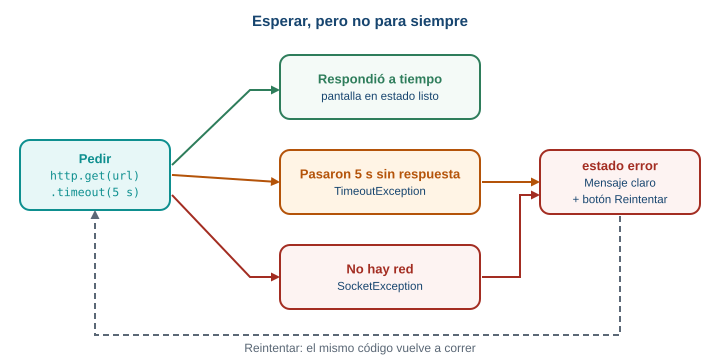
El camino de una petición con límite de espera: tres salidas posibles, y el botón “Reintentar” que vuelve al principio.
Qué falla y cómo se ve cada cosa
Hay cuatro maneras de que una petición no termine bien, y cada una se ve distinta en el código:
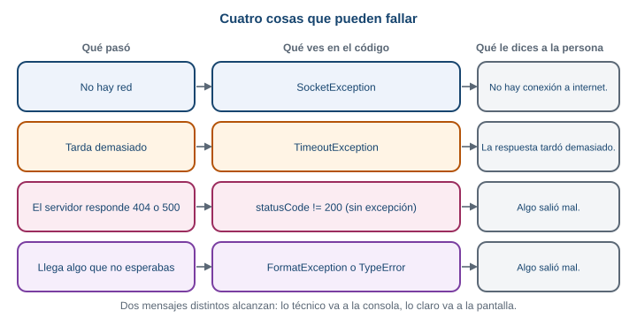
Un servidor que responde 404 o 500 no lanza excepción por sí solo: la guía lo convierte en una con una comprobación de statusCode. Un JSON inesperado lanza FormatException o TypeError.
Recuerda: el estado dice qué cara tiene la pantalla; setState es lo que la cambia.
http.get(url).timeout(const Duration(seconds: 5))pone un límite de espera.- Sin respuesta a tiempo:
TimeoutException. Sin conexión:SocketException. - Con
try, las ramason Tipovan de la más específica a la más general, ycatch (e)al final. - Si
statusCode != 200, lanza una excepción propia para llevarlo alcatch. - El botón “Reintentar” llama otra vez a
cargar(), que empieza poniendocargando.
¿Por qué el mensaje técnico va a la consola y no a la pantalla? Quien usa la app no puede hacer nada con errno = 7. Pero tú sí: es la pista para depurar. Dos destinatarios, dos mensajes. La pantalla dice qué pasó y qué puede hacer la persona; la consola dice por qué, para quien programa.
9 Parte 8. El catálogo con clima
Es el momento de juntar todo en taller_login, el proyecto de la Semana 5. Vas a agregar una pantalla CatalogoScreen que muestra los productos que van bien con el clima de Envigado, con sus cuatro estados. Al terminar, el flujo completo es este:
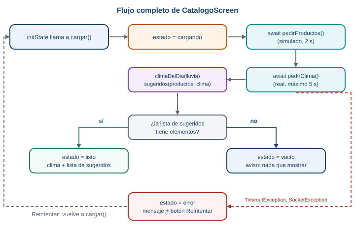
El flujo de CatalogoScreen. Cada caja la construyes en un paso de esta parte.
La regla de temporada
El proyecto real sabe qué está en temporada porque lo calcula el servidor. Tu catálogo no tiene ese servidor, así que usa una regla muy simple y fija, escrita en el código:
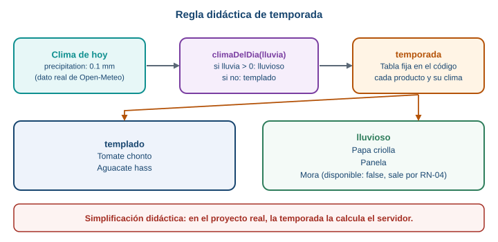
Una regla didáctica de dos pasos: del dato de lluvia sale un tipo de clima, y una tabla dice qué va con cada tipo.
Esta regla es una simplificación didáctica. Una tabla de cinco productos y un umbral de lluvia no dicen de verdad qué está en temporada. En el proyecto real, la temporada la calcula el servidor. Aquí sirve para practicar el flujo de datos, no para saber de agricultura.
Además aplica una regla de negocio del proyecto: RN-04, un producto no disponible se retira del catálogo visible.
1 Dependencia, modelo y permiso
En la carpeta de taller_login:
flutter pub add httpCrea lib/modelo.dart con las dos clases de la Parte 2, Producto y Clima. Después agrega, debajo de ellas, la tabla de temporada y las dos funciones de la regla:
// Simplificación didáctica: en el proyecto real, la temporada la
// calcularía el servidor. Aquí es una tabla fija.
const temporada = {
'Tomate chonto': 'templado',
'Aguacate hass': 'templado',
'Papa criolla': 'lluvioso',
'Panela': 'lluvioso',
'Mora': 'lluvioso',
};
String climaDelDia(double lluvia) {
return lluvia > 0 ? 'lluvioso' : 'templado';
}
List<Producto> sugeridos(List<Producto> productos, String clima) {
return productos
.where((p) => p.disponible && temporada[p.nombre] == clima)
.toList();
}temporadaes unMapde nombre de producto a clima ideal.climaDelDia(lluvia)devuelve'lluvioso'si llovió algo (lluvia > 0) y'templado'si no.sugeridos(...)se queda con los productos que están disponibles (RN-04) y cuyo clima ideal coincide con el de hoy.wherefiltra una lista;toList()junta el resultado.
Agrega también el permiso INTERNET al manifiesto principal, como en la Parte 5 (android/app/src/main/AndroidManifest.xml).
Para comprobar la regla sin abrir el emulador, escribe test/modelo_test.dart:
import 'package:flutter_test/flutter_test.dart';
import 'package:taller_login/modelo.dart';
void main() {
test('climaDelDia', () {
expect(climaDelDia(0.0), 'templado');
expect(climaDelDia(1.2), 'lluvioso');
});
test('sugeridos respeta clima y disponibilidad (RN-04)', () {
final todos = [
Producto(id: 1, nombre: 'Tomate chonto', precio: 3500, disponible: true),
Producto(id: 2, nombre: 'Papa criolla', precio: 4200, disponible: true),
Producto(id: 5, nombre: 'Mora', precio: 7000, disponible: false),
];
expect(sugeridos(todos, 'templado').map((p) => p.nombre), ['Tomate chonto']);
expect(sugeridos(todos, 'lluvioso').map((p) => p.nombre), ['Papa criolla']);
expect(sugeridos([], 'templado'), isEmpty);
});
}Ejecuta flutter test: pasan. Mora no se sugiere con lluvia porque no está disponible.
2 La pantalla y la ruta
En lib/main.dart, agrega los imports que usará la pantalla, arriba del archivo:
import 'dart:async';
import 'dart:convert';
import 'dart:io';
import 'package:flutter/material.dart';
import 'package:http/http.dart' as http;
import 'modelo.dart';Agrega la ruta /catalogo (como en la Semana 5, Parte 11). Si tu MaterialApp todavía usa home:, cámbialo por initialRoute y routes:
initialRoute: '/',
routes: {
'/': (context) => const LoginScreen(),
'/catalogo': (context) => const CatalogoScreen(),
},Y haz que el botón “Iniciar sesión” del login navegue a la pantalla nueva:
onPressed: () {
Navigator.pushNamed(context, '/catalogo');
},Al final de main.dart, agrega el esqueleto de la pantalla. Es un StatefulWidget con su State, como el contador de la Parte 3, todavía sin datos:
class CatalogoScreen extends StatefulWidget {
const CatalogoScreen({super.key});
@override
State<CatalogoScreen> createState() => _CatalogoScreenState();
}
class _CatalogoScreenState extends State<CatalogoScreen> {
@override
Widget build(BuildContext context) {
return Scaffold(
appBar: AppBar(title: const Text('Catálogo de temporada')),
body: const Center(child: Text('Aquí irá el catálogo')),
);
}
}Ejecuta y pulsa “Iniciar sesión”: ves la pantalla con el texto provisional. Los imports quedarán sin usar (el analizador los marca como advertencia) hasta los pasos siguientes.
3 Los cuatro estados, todavía sin datos reales
Agrega el enum encima de la clase, y dentro del State las variables del estado y el método cuerpo(). Por ahora los valores son de ejemplo, escritos a mano:
enum Estado { cargando, listo, vacio, error }Dentro de _CatalogoScreenState, antes de build:
Estado estado = Estado.cargando;
String mensajeError = 'Algo salió mal.';
String resumenClima = 'Hoy en Envigado: 22.3 °C';
String tipoClima = 'templado';
List<Producto> recomendados = [
Producto(id: 1, nombre: 'Tomate chonto', precio: 3500, disponible: true),
];
Widget cuerpo() {
if (estado == Estado.cargando) {
return const Center(
child: Column(
mainAxisSize: MainAxisSize.min,
children: [
CircularProgressIndicator(),
SizedBox(height: 16),
Text('Consultando el clima y el catálogo...'),
],
),
);
}
if (estado == Estado.error) {
return Center(
child: Column(
mainAxisSize: MainAxisSize.min,
children: [
const Icon(Icons.cloud_off, size: 64),
const SizedBox(height: 12),
Text(mensajeError),
const SizedBox(height: 12),
FilledButton(onPressed: () {}, child: const Text('Reintentar')),
],
),
);
}
if (estado == Estado.vacio) {
return Center(
child: Column(
mainAxisSize: MainAxisSize.min,
children: [
const Icon(Icons.inbox_outlined, size: 64),
const SizedBox(height: 12),
Text('Con clima $tipoClima no hay productos disponibles hoy.'),
],
),
);
}
return Column(
children: [
Card(
margin: const EdgeInsets.all(16),
child: ListTile(
leading: const Icon(Icons.wb_sunny_outlined),
title: Text(resumenClima),
subtitle: Text('Clima $tipoClima: esto va bien hoy'),
),
),
Expanded(
child: ListView(
children: [
for (final p in recomendados)
ListTile(
title: Text(p.nombre),
subtitle: Text('\$ ${p.precio} COP'),
),
],
),
),
],
);
}Y cambia el cuerpo del Scaffold de build para que llame a cuerpo():
@override
Widget build(BuildContext context) {
return Scaffold(
appBar: AppBar(title: const Text('Catálogo de temporada')),
body: cuerpo(),
);
}Ejecuta. Ves el estado cargando, porque es el valor inicial de estado. Para ver los otros tres, cambia Estado.cargando en Estado estado = Estado.cargando; por Estado.listo, Estado.vacio y Estado.error, y haz hot restart cada vez. Así verificas que cada cara de la pantalla se ve bien antes de conectar datos. Cuando termines, deja Estado.cargando.
4 Los productos: el servidor de mentira
Agrega, encima de la clase CatalogoScreen, el JSON de productos y la función que lo “pide” (es la misma de la Parte 6):
const productosJson = '''
[
{"id": 1, "nombre": "Tomate chonto", "precio": 3500, "disponible": true},
{"id": 2, "nombre": "Papa criolla", "precio": 4200, "disponible": true},
{"id": 3, "nombre": "Aguacate hass", "precio": 6800, "disponible": true},
{"id": 4, "nombre": "Panela", "precio": 5500, "disponible": true},
{"id": 5, "nombre": "Mora", "precio": 7000, "disponible": false}
]
''';
// Servidor de mentira: espera 2 segundos y devuelve el JSON de arriba.
Future<List<Producto>> pedirProductos() async {
await Future.delayed(const Duration(seconds: 2));
final lista = jsonDecode(productosJson) as List;
return lista.map((e) => Producto.fromJson(e)).toList();
}En el State, vacía los valores de ejemplo y agrega initState y cargar():
Estado estado = Estado.cargando;
String mensajeError = 'Algo salió mal.';
String resumenClima = 'Clima pendiente';
String tipoClima = 'pendiente';
List<Producto> recomendados = [];
@override
void initState() {
super.initState();
cargar();
}
Future<void> cargar() async {
setState(() {
estado = Estado.cargando;
});
final productos = await pedirProductos();
if (!mounted) return;
setState(() {
recomendados = productos;
estado = productos.isEmpty ? Estado.vacio : Estado.listo;
});
}Ejecuta. Después de 2 segundos, aparecen los cinco productos, incluida la Mora no disponible, y la tarjeta dice Clima pendiente. Todavía no hay clima ni filtro.
Recuerda: el pedido va en initState, la respuesta pasa por setState, y build solo dibuja.
5 El clima real
Agrega la función que pide el clima, debajo de pedirProductos. Es la de la Parte 7:
// Petición real a Open-Meteo, con un máximo de 5 segundos de espera.
Future<Clima> pedirClima() async {
final url = Uri.parse(
'https://api.open-meteo.com/v1/forecast'
'?latitude=6.17&longitude=-75.58'
'¤t=temperature_2m,precipitation,weather_code',
);
final respuesta = await http.get(url).timeout(const Duration(seconds: 5));
if (respuesta.statusCode != 200) {
throw Exception('El servidor respondió ${respuesta.statusCode}');
}
return Clima.fromJson(jsonDecode(respuesta.body));
}Y cambia cargar() para que pida también el clima y arme el resumen:
Future<void> cargar() async {
setState(() {
estado = Estado.cargando;
});
final productos = await pedirProductos();
final clima = await pedirClima();
if (!mounted) return;
setState(() {
resumenClima =
'Hoy en Envigado: ${clima.temperatura} °C, lluvia ${clima.lluvia} mm';
recomendados = productos;
estado = productos.isEmpty ? Estado.vacio : Estado.listo;
});
}Ejecuta. Esperas unos segundos (dos del servidor de mentira y lo que tarde la red) y la tarjeta muestra el clima real de Envigado, por ejemplo Hoy en Envigado: 21.7 °C, lluvia 0.1 mm. Sin conexión, la pantalla se quedaría en cargando para siempre, porque todavía no hay catch: lo arreglas en el paso 7.
6 La regla de temporada
Ahora usa el clima para decidir qué mostrar. Cambia el bloque de setState de cargar():
if (!mounted) return;
final tipo = climaDelDia(clima.lluvia);
final lista = sugeridos(productos, tipo);
setState(() {
tipoClima = tipo;
resumenClima =
'Hoy en Envigado: ${clima.temperatura} °C, lluvia ${clima.lluvia} mm';
recomendados = lista;
estado = lista.isEmpty ? Estado.vacio : Estado.listo;
});Los cálculos (tipo y lista) van antes de setState, y dentro del setState solo se asignan las variables. Ejecuta. La tarjeta dice ahora Clima lluvioso: esto va bien hoy o Clima templado: ..., y la lista muestra solo los productos que van con ese clima y están disponibles. En la verificación de esta guía (2 de octubre de 2026, a las 22:28 UTC) llovía 0.1 mm: clima lluvioso, y se mostraron Papa criolla y Panela. Mora también va con lluvia, pero no está disponible (RN-04), así que no aparece. Con tu clima de hoy, el resultado puede ser otro.
Si la lista de sugeridos queda vacía, el estado pasa a vacio, y se ve el aviso Con clima lluvioso no hay productos disponibles hoy.
7 Errores, tiempo de espera y reintento
Es el paso que evita el círculo infinito. Envuelve las dos esperas de cargar() en un try, atrapa los dos errores de red y agrega un método que cambia a error:
Future<void> cargar() async {
setState(() {
estado = Estado.cargando;
});
try {
final productos = await pedirProductos();
final clima = await pedirClima();
if (!mounted) return;
final tipo = climaDelDia(clima.lluvia);
final lista = sugeridos(productos, tipo);
setState(() {
tipoClima = tipo;
resumenClima =
'Hoy en Envigado: ${clima.temperatura} °C, lluvia ${clima.lluvia} mm';
recomendados = lista;
estado = lista.isEmpty ? Estado.vacio : Estado.listo;
});
} on TimeoutException {
mostrarError('La respuesta tardó demasiado.');
} on SocketException {
mostrarError('No hay conexión a internet.');
} catch (e) {
debugPrint('Error inesperado: $e');
mostrarError('Algo salió mal. Intenta de nuevo.');
}
}
void mostrarError(String mensaje) {
if (!mounted) return;
setState(() {
mensajeError = mensaje;
estado = Estado.error;
});
}Y conecta el botón “Reintentar”, que en el paso 3 no hacía nada:
FilledButton(onPressed: cargar, child: const Text('Reintentar')),mostrarError revisa mounted por sí mismo, así que las tres ramas del catch no repiten esa comprobación. Cada rama cae en error con un mensaje distinto, y “Reintentar” llama a cargar(), que empieza poniendo cargando.
8 Probar los cuatro estados
Comprueba cada estado con una acción concreta:
| Estado | Cómo provocarlo | Qué ves |
|---|---|---|
cargando |
Abre la pantalla | El indicador y Consultando el clima y el catálogo... |
listo |
Con conexión, espera | La tarjeta del clima y la lista de sugeridos |
vacio |
Cambia productosJson por '[]' y haz hot restart |
El ícono de bandeja y el aviso con el clima |
error por red |
Activa el modo avión y abre la pantalla | No hay conexión a internet. y “Reintentar” |
error por tiempo |
Cambia seconds: 5 por milliseconds: 1 en pedirClima |
La respuesta tardó demasiado. |
error por código |
Cambia /v1/forecast por /v1/forecasto |
Algo salió mal. Intenta de nuevo. |
Estos cuatro estados se comprobaron en un emulador de Android: cargando, listo, vacio (con el JSON vacío), y error con modo avión, con tiempo agotado tras volver del modo avión, y con la ruta /v1/forecasto (que registró Exception: El servidor respondió 404 en la consola). Cuando termines, deshaz los cambios de prueba.
El código completo del catálogo
Para comparar con el tuyo, así queda el final de main.dart, desde el enum hasta el final del archivo. Todo lo anterior (login, TallerLoginApp) queda igual, salvo los imports y la ruta del paso 2.
enum Estado { cargando, listo, vacio, error }
const productosJson = '''
[
{"id": 1, "nombre": "Tomate chonto", "precio": 3500, "disponible": true},
{"id": 2, "nombre": "Papa criolla", "precio": 4200, "disponible": true},
{"id": 3, "nombre": "Aguacate hass", "precio": 6800, "disponible": true},
{"id": 4, "nombre": "Panela", "precio": 5500, "disponible": true},
{"id": 5, "nombre": "Mora", "precio": 7000, "disponible": false}
]
''';
// Servidor de mentira: espera 2 segundos y devuelve el JSON de arriba.
Future<List<Producto>> pedirProductos() async {
await Future.delayed(const Duration(seconds: 2));
final lista = jsonDecode(productosJson) as List;
return lista.map((e) => Producto.fromJson(e)).toList();
}
// Petición real a Open-Meteo, con un máximo de 5 segundos de espera.
Future<Clima> pedirClima() async {
final url = Uri.parse(
'https://api.open-meteo.com/v1/forecast'
'?latitude=6.17&longitude=-75.58'
'¤t=temperature_2m,precipitation,weather_code',
);
final respuesta = await http.get(url).timeout(const Duration(seconds: 5));
if (respuesta.statusCode != 200) {
throw Exception('El servidor respondió ${respuesta.statusCode}');
}
return Clima.fromJson(jsonDecode(respuesta.body));
}
class CatalogoScreen extends StatefulWidget {
const CatalogoScreen({super.key});
@override
State<CatalogoScreen> createState() => _CatalogoScreenState();
}
class _CatalogoScreenState extends State<CatalogoScreen> {
Estado estado = Estado.cargando;
String mensajeError = '';
String resumenClima = '';
String tipoClima = '';
List<Producto> recomendados = [];
@override
void initState() {
super.initState();
cargar();
}
Future<void> cargar() async {
setState(() {
estado = Estado.cargando;
});
try {
final productos = await pedirProductos();
final clima = await pedirClima();
if (!mounted) return;
final tipo = climaDelDia(clima.lluvia);
final lista = sugeridos(productos, tipo);
setState(() {
tipoClima = tipo;
resumenClima =
'Hoy en Envigado: ${clima.temperatura} °C, lluvia ${clima.lluvia} mm';
recomendados = lista;
estado = lista.isEmpty ? Estado.vacio : Estado.listo;
});
} on TimeoutException {
mostrarError('La respuesta tardó demasiado.');
} on SocketException {
mostrarError('No hay conexión a internet.');
} catch (e) {
debugPrint('Error inesperado: $e');
mostrarError('Algo salió mal. Intenta de nuevo.');
}
}
void mostrarError(String mensaje) {
if (!mounted) return;
setState(() {
mensajeError = mensaje;
estado = Estado.error;
});
}
Widget cuerpo() {
if (estado == Estado.cargando) {
return const Center(
child: Column(
mainAxisSize: MainAxisSize.min,
children: [
CircularProgressIndicator(),
SizedBox(height: 16),
Text('Consultando el clima y el catálogo...'),
],
),
);
}
if (estado == Estado.error) {
return Center(
child: Column(
mainAxisSize: MainAxisSize.min,
children: [
const Icon(Icons.cloud_off, size: 64),
const SizedBox(height: 12),
Text(mensajeError),
const SizedBox(height: 12),
FilledButton(onPressed: cargar, child: const Text('Reintentar')),
],
),
);
}
if (estado == Estado.vacio) {
return Center(
child: Column(
mainAxisSize: MainAxisSize.min,
children: [
const Icon(Icons.inbox_outlined, size: 64),
const SizedBox(height: 12),
Text('Con clima $tipoClima no hay productos disponibles hoy.'),
],
),
);
}
return Column(
children: [
Card(
margin: const EdgeInsets.all(16),
child: ListTile(
leading: const Icon(Icons.wb_sunny_outlined),
title: Text(resumenClima),
subtitle: Text('Clima $tipoClima: esto va bien hoy'),
),
),
Expanded(
child: ListView(
children: [
for (final p in recomendados)
ListTile(
title: Text(p.nombre),
subtitle: Text('\$ ${p.precio} COP'),
),
],
),
),
],
);
}
@override
Widget build(BuildContext context) {
return Scaffold(
appBar: AppBar(title: const Text('Catálogo de temporada')),
body: cuerpo(),
);
}
}Lo que queda fuera de esta guía
Para mantener el catálogo simple, hay cosas que existen y esta guía no usa:
FutureBuilder, un widget que reconstruye cuando termina unFuture.- Reintentos automáticos con espera creciente (backoff exponencial).
- Paquetes que generan el código de
fromJsonpor ti. - Guardar el último catálogo para verlo sin conexión (RN-06): es el tema de la Semana 8.
10 Errores frecuentes
Error 1
setState() called after dispose()
setState() called after dispose(): _LentoState#20759(lifecycle state: defunct, not mounted)Causa. Una función async llamó a setState después de que la pantalla se cerró. El número después de # cambia en cada ejecución.
Solución. Después de cada await y antes de setState, escribe if (!mounted) return;.
Error 2
La pantalla no cambia aunque la variable sí
Causa. La variable cambió fuera de setState, o la pantalla es un StatelessWidget. No hay mensaje de error: la consola, con un debugPrint, muestra que el valor sí cambió.
Solución. Cambia la variable dentro de setState(() { ... }), en un State de un StatefulWidget. Es la Parte 3.
Error 3
Functions marked ‘async’ must have a return type…
Functions marked 'async' must have a return type which is a supertype of 'Future'.Causa. Marcaste build como async. build tiene que devolver un Widget de inmediato.
Solución. Quita async de build. Pon el trabajo asíncrono en otro método (cargar) y llámalo desde initState.
Error 4
The getter ‘statusCode’ isn’t defined for the type Future<Response>
The getter 'statusCode' isn't defined for the type 'Future<Response>'.Causa. Falta el await delante de http.get(...). Lo que tienes es el Future, no la respuesta.
Solución. Escribe final respuesta = await http.get(url); dentro de una función async.
Error 5
The argument type ‘String’ can’t be assigned to the parameter type ‘Uri’
The argument type 'String' can't be assigned to the parameter type 'Uri'.Causa. Pasaste el texto de la URL directamente a http.get.
Solución. Envuélvelo: http.get(Uri.parse('https://...')).
Error 6
Failed host lookup, con internet funcionando
ClientException with SocketException: Failed host lookup: 'api.open-meteo.com'
(OS Error: No address associated with hostname, errno = 7), uri=https://api.open-meteo.com/...Causa. Dos posibles. Sin conexión real (modo avión, sin señal), o, aunque haya internet, falta el permiso INTERNET en el manifiesto principal de Android.
Solución. Confirma que el celular tiene conexión. Si la tiene, agrega <uses-permission android:name="android.permission.INTERNET"/> a android/app/src/main/AndroidManifest.xml, y detén la app y vuelve a ejecutarla (no basta un hot reload).
Error 7
Connection refused con localhost
ClientException with SocketException: Connection refused (OS Error: Connection refused, errno = 111),
address = localhost, port = 33518, uri=http://localhost:8000/Causa. En el emulador de Android, localhost es el propio emulador, no tu computador. El número de port cambia en cada intento.
Solución. Para llegar al servidor de tu computador desde el emulador, usa 10.0.2.2: http://10.0.2.2:8000/.
Error 8
FormatException: Unexpected character
FormatException: Unexpected character (at character 1)
<html>Not found</html>
^Causa. jsonDecode recibió algo que no es JSON, por ejemplo una página HTML de error. Pasa cuando la dirección está mal y el servidor responde con una página en vez de datos. El ^ marca el primer carácter inesperado.
Solución. Revisa statusCode antes de decodificar, e imprime respuesta.body con debugPrint para ver qué llegó de verdad.
Error 9
type ‘Null’ is not a subtype of type ‘int’
type 'Null' is not a subtype of type 'int'Causa. Un campo que fromJson espera como int no vino en el JSON, o vino como null.
Solución. Compara las claves de tu fromJson con las del JSON real (un debugPrint del body ayuda). Si el campo puede faltar de verdad, declara el campo como opcional o dale un valor por defecto con ??, como disponible en Producto.
Error 10
El círculo de carga nunca termina
Causa. La petición falló y no hay try/catch, o algún catch no cambia el estado a error. No hay mensaje de error en pantalla; en la consola puede haber un Unhandled Exception.
Solución. Envuelve las esperas en try, y asegúrate de que todas las ramas del catch terminen llamando a setState con el estado error. Agrega también un límite de espera (timeout).
11 Retos
Parte del contador de la Parte 3. Agrega dos botones: “Restar”, que baja el contador en uno, y “Reiniciar”, que lo deja en cero. Los dos deben cambiar la pantalla.
class _ContadorState extends State<Contador> {
int cuenta = 0;
@override
Widget build(BuildContext context) {
return Scaffold(
appBar: AppBar(title: const Text('Contador')),
body: Center(
child: Column(
mainAxisSize: MainAxisSize.min,
children: [
Text('Llevas $cuenta', style: const TextStyle(fontSize: 32)),
const SizedBox(height: 16),
Row(
mainAxisSize: MainAxisSize.min,
children: [
ElevatedButton(
onPressed: () {
setState(() {
cuenta = cuenta - 1;
});
},
child: const Text('Restar'),
),
const SizedBox(width: 12),
ElevatedButton(
onPressed: () {
setState(() {
cuenta = 0;
});
},
child: const Text('Reiniciar'),
),
],
),
],
),
),
);
}
}Cada botón cambia la variable dentro de setState. Si quitas el setState de uno de los dos, ese botón cambia el valor pero la pantalla no se entera.
Agrega a Producto un campo opcional categoria (String?): algunos productos del JSON la traen y otros no. Escribe una función que devuelva la categoría, o 'Sin categoría' si falta.
class Producto {
final int id;
final String nombre;
final int precio;
final bool disponible;
final String? categoria;
Producto({
required this.id,
required this.nombre,
required this.precio,
required this.disponible,
this.categoria,
});
factory Producto.fromJson(Map<String, dynamic> json) {
return Producto(
id: json['id'],
nombre: json['nombre'],
precio: json['precio'],
disponible: json['disponible'] ?? true,
categoria: json['categoria'],
);
}
}
String etiqueta(Producto p) {
return p.categoria ?? 'Sin categoría';
}String? (con el signo de interrogación) significa “un String o null”. El campo no es required, y json['categoria'] puede devolver null sin que falle. El ?? pone el texto por defecto al mostrarlo. A diferencia de precio, aquí un valor ausente es normal y no esconde ningún problema.
Con el ejemplo de la Parte 7, provoca a propósito un fallo de red, un fallo de tiempo y un 404. Para cada uno, anota qué mensaje ve la persona y qué se imprime en la consola.
| Fallo | Cómo provocarlo | Pantalla | Consola |
|---|---|---|---|
| Red | Modo avión, y abrir la pantalla | No hay conexión a internet. |
Nada (la rama SocketException no imprime) |
| Tiempo | Duration(milliseconds: 1) en .timeout |
La respuesta tardó demasiado. |
Nada (la rama TimeoutException no imprime) |
404 |
Cambiar la ruta a /v1/forecasto |
Algo salió mal. Intenta de nuevo. |
Error inesperado: Exception: El servidor respondió 404 |
Los dos primeros tienen una rama propia con un mensaje específico. El 404 llega a la rama general porque pedirClima lo convierte en una Exception genérica. Si quisieras un mensaje distinto para los códigos de estado, tendrías que lanzar un tipo de excepción propio. Esta guía lo deja fuera a propósito.
Agrega al AppBar de CatalogoScreen un botón con el ícono de actualizar que vuelva a cargar el catálogo.
appBar: AppBar(
title: const Text('Catálogo de temporada'),
actions: [
IconButton(
icon: const Icon(Icons.refresh),
onPressed: cargar,
),
],
),actions es la lista de botones a la derecha del título. onPressed: cargar pasa la función sin paréntesis, igual que en “Reintentar”. Como cargar() empieza poniendo Estado.cargando, la pantalla vuelve al indicador de carga y repite todo el recorrido.
12 Lo que debes poder explicar
Esta semana no tiene actividad ni entregable. La lista es solo para que compruebes tu comprensión.
13 Autoevaluación formativa
Ocho preguntas para comprobar si el mecanismo quedó claro. No tienen nota: sirven para ti. Responde primero por escrito, y después abre la respuesta.
1. Un StatelessWidget tiene int cuenta = 0; dentro de build y un botón que hace cuenta = cuenta + 1. Pulsas 5 veces. ¿Qué lees en pantalla y por qué?
Lees 0. Nadie le pidió a Flutter que dibuje de nuevo, así que la pantalla no se entera de que la variable cambió. Y aunque build corriera otra vez, volvería a ejecutar int cuenta = 0; y el contador arrancaría de cero. El dato que cambia tiene que vivir en el State y cambiarse dentro de setState.
2. ¿Qué tres cosas hace setState, en orden?
Ejecuta la función que le pasas (donde cambias la variable), marca la pantalla como desactualizada y pide a Flutter que ejecute build otra vez. setState no dibuja nada: dibuja build.
3. Pones una petición dentro de build. ¿Qué problema aparece?
build corre cada vez que hay un setState. La petición se repite en cada reconstrucción, y cada respuesta llama a setState, que provoca otra reconstrucción y otra petición: un bucle. Los pedidos van en initState, que corre una sola vez.
4. Una respuesta llega cuando la persona ya salió de la pantalla. ¿Qué error ocurre y cómo se evita?
setState() llamado después de dispose(), con lifecycle state: defunct, not mounted. Se evita con if (!mounted) return; después del await y antes del setState.
5. ¿Por qué build no puede ser async?
Porque build tiene que devolver un Widget de inmediato, y una función async devuelve un Future. Flutter necesita el widget ahora para dibujar. El trabajo asíncrono va en otro método que termina con un setState.
6. El servidor responde 200 con la lista []. ¿En qué estado queda la pantalla y por qué no es error?
En vacio. La petición salió bien y el servidor contestó que no hay nada. Un error es cuando algo falla. Separarlos permite mostrar un aviso distinto: en vacio no hay nada que reintentar; en error sí.
7. http.get devuelve 404. ¿Lanza una excepción? ¿Y cuando no hay conexión?
Con un 404 no lanza ninguna excepción: la petición llegó y el servidor respondió. Hay que revisar respuesta.statusCode con un if. Sin conexión sí lanza una excepción (SocketException), porque ninguna respuesta llegó.
8. En un try pones primero catch (e) y después on TimeoutException. ¿Qué pasa?
Dart revisa las ramas en orden y entra a la primera que coincide. El catch (e) general atrapa cualquier error, así que la rama on TimeoutException nunca corre. Las ramas específicas van primero y la general al final.
14 Recursos
- Traer datos de internet, Flutter: docs.flutter.dev/cookbook/networking/fetch-data
- Estado efímero y estado de la app, Flutter: docs.flutter.dev/data-and-backend/state-mgmt/ephemeral-vs-app
StatefulWidget, API de Flutter: api.flutter.dev/flutter/widgets/StatefulWidget-class.htmlState.setState, API de Flutter: api.flutter.dev/flutter/widgets/State/setState.htmlState.mounted, API de Flutter: api.flutter.dev/flutter/widgets/State/mounted.html- Programación asíncrona en Dart: dart.dev/libraries/async/async-await
- Práctica guiada de async y await, Dart: dart.dev/codelabs/async-await
Future.timeout, API de Dart: api.dart.dev/dart-async/Future/timeout.html- Manejo de errores en Dart: dart.dev/language/error-handling
- Serialización de JSON, Flutter: docs.flutter.dev/data-and-backend/serialization/json
- El paquete
http: pub.dev/packages/http - API de pronóstico, Open-Meteo: open-meteo.com/en/docs
- Códigos de estado HTTP, MDN: developer.mozilla.org
- Redes en el emulador de Android (
10.0.2.2): developer.android.com/studio/run/emulator-networking
Programación Móvil (IF2004). Institución Universitaria de Envigado. Facultad de Ingenierías. Semestre 2026-02.
Transparencia. La redacción de esta guía contó con el apoyo de inteligencia artificial, usando el modelo Claude Sonnet 5.5 de Anthropic. Todo el contenido fue revisado y validado.